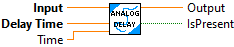

Delay in seconds. Default is 1.0. Once the delay has started, this value cannot be changed.
This VI implements an analog "time delay". The output is the input delayed by "Delay" seconds. If the "Delay" time does not exactly match the sample period,, the value is calculated by interpolating the nearest buffer samples.
Inputs:
- Input -- Double input value
- Delay Time -- Time (seconds) to delay the otuput value. If time delay is increaed, then the buffer is re-created. FALSE will be returned until the buffer has sufficient data to return a delayed value.
- Time -- Continously counting system time, Seconds. If not wired the FPGA time will be used.
Outputs:
- Output -- Double output value with delay applied
- IsPresent -- Set to TRUE if the buffer has enough data to return a delayed value.

|
|
Delay Time Delay in seconds. Default is 1.0. Once the delay has started, this value cannot be changed. |
|
|
Time Optional clock input representing elapsed seconds. If this parameter is not specified, this routine reads the system clock or FGPA clock to obtain the time. For best sequencing use of an external time is suggested. |
|
|
Input required boolean input to generate off delay from |
|
|
Output Digital Output |
|
|
IsPresent |